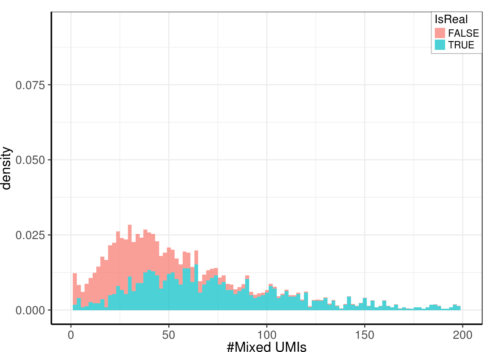
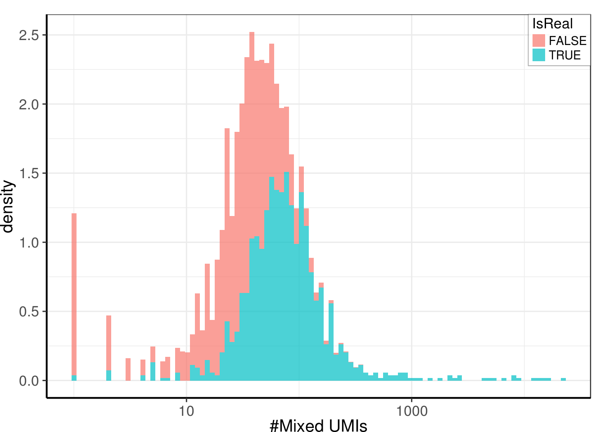
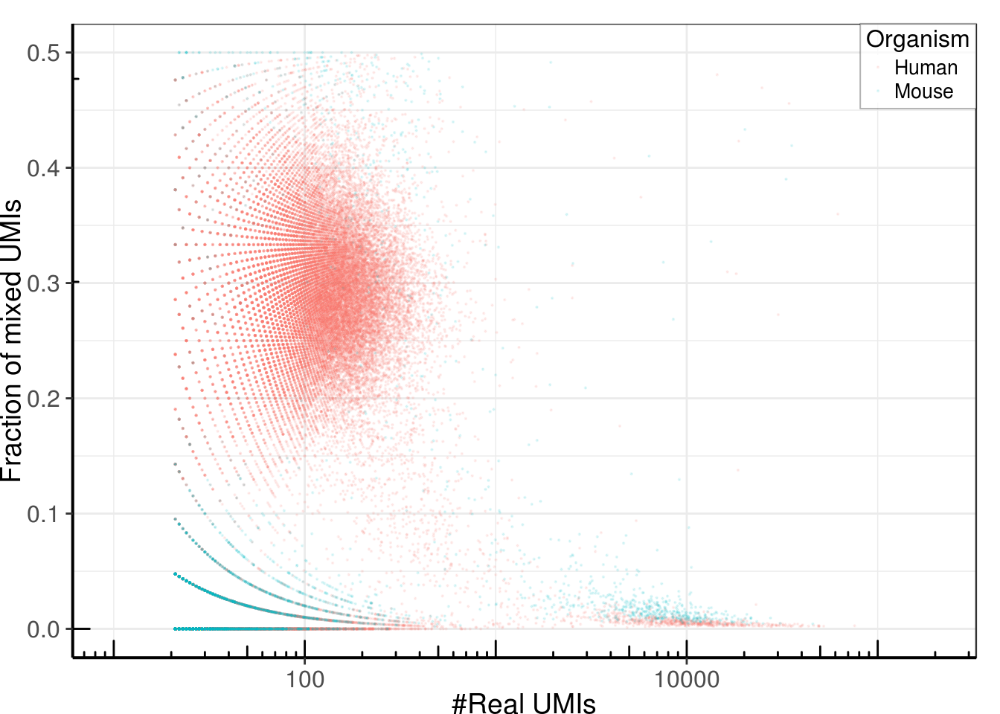
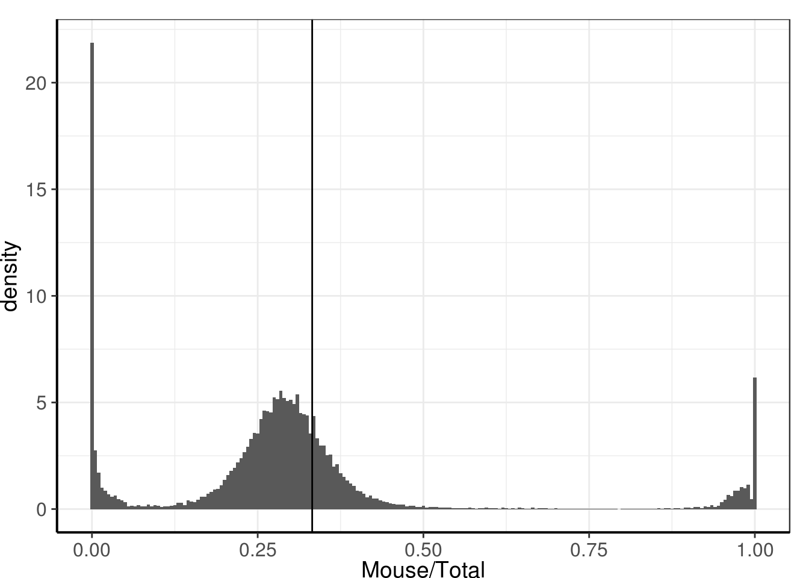
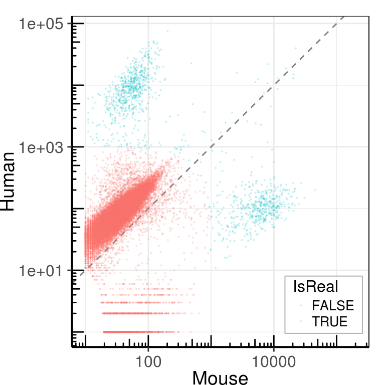
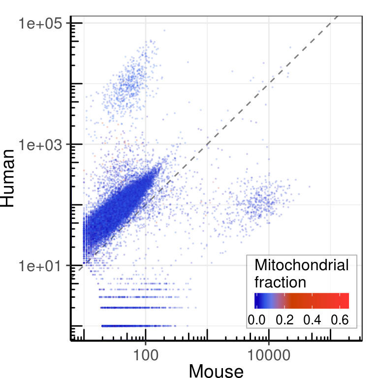

Precise Merge Validation
Source file: notebooks/human_mouse/hm_drop_seq.Rmd
0.1 Origin of mixed reads
holder <- readRDS('../../data/dropest/dropseq/thousand/est_2018_01_25_filtered/thousand.rds')
bc_data <- PrepareLqCellsDataPipeline(holder, scale=FALSE) %>%
tibble::rownames_to_column("CB")## Loading required package: Matrixcm_real <- holder$cm_raw
cell_number <- 1000
gene_species <- ifelse(substr(rownames(cm_real), 1, 2) == "HU", 'Human', 'Mouse') %>%
as.factor()
umi_by_species <- lapply(levels(gene_species), function(l) cm_real[gene_species == l,] %>%
Matrix::colSums()) %>% as.data.frame() %>%
`colnames<-`(levels(gene_species)) %>% tibble::rownames_to_column('CB') %>%
as_tibble() %>%
mutate(Total = Human + Mouse, Organism=ifelse(Human > Mouse, "Human", "Mouse"),
# IsReal=order(Total, decreasing=T) <= cell_number) %>%
IsReal=Total > 1e3) %>%
filter(Total > 20)
mit_genes <- rownames(holder$cm_raw)[grep("_MT:.+", rownames(holder$cm_raw))]
umi_by_species <- umi_by_species %>% mutate(
MitochondrionFraction = GetGenesetFraction(holder$cm_raw, mit_genes)[CB]
)gg <- ggplot(umi_by_species, aes(y=..density.., fill=IsReal)) +
theme_pdf(legend.pos=c(1, 1))
gg + geom_histogram(aes(x=pmin(Human, Mouse) / Total), binwidth=0.005, alpha=0.7)
gg + geom_histogram(aes(x=pmin(Human, Mouse)), binwidth=2, alpha=0.7) +
xlim(0, 200) + xlab('#Mixed UMIs')
gg +
geom_histogram(aes(x=pmin(Human, Mouse)), bins=100, alpha=0.7) +
scale_x_log10(name='#Mixed UMIs') +
theme_pdf(legend.pos=c(1, 1))
ggplot(umi_by_species) +
geom_point(aes(x=Total, y=pmin(Human, Mouse) / Total, color=Organism), size=0.1, alpha=0.1) +
scale_x_log10(name='#Real UMIs', limits=c(10, 2e5)) + annotation_logticks() + ylab('Fraction of mixed UMIs') +
theme_pdf(legend.pos=c(1, 1))
Consistence with common distribution
mouse_frac <- umi_by_species %>% filter(IsReal) %>%
summarise(Mouse=sum(Mouse[Organism == 'Mouse']), Human=sum(Human[Organism == 'Human']), MF=Mouse / (Mouse + Human)) %>% .$MF
ggplot(umi_by_species) +
geom_histogram(aes(x=Mouse / Total, y=..density..), binwidth=0.005) +
geom_vline(xintercept=mouse_frac) +
theme_pdf()
gg <- ggplot(umi_by_species) +
geom_abline(aes(slope=1, intercept=0), linetype='dashed', alpha=0.5) +
scale_x_log10(limits=c(10, 2e5)) + scale_y_log10() + annotation_logticks() +
theme_pdf(legend.pos=c(0.97, 0.05)) + theme(legend.margin=margin(l=3, r=3, unit="pt"))
gg + geom_point(aes(x=Mouse, y=Human, color=IsReal), size=0.1, alpha=0.15)
gg +
geom_point(aes(x=Mouse, y=Human, color=MitochondrionFraction), size=0.1, alpha=0.15) +
scale_color_gradientn(colours=c("#1200ba", "#347fff", "#cc4000", "#ff3333"), values=scales::rescale(c(0, 0.1, 0.3, 0.8))) +
guides(color=guide_colorbar(direction="horizontal", title.position="top", title="Mitochondrial\nfraction", barwidth=unit(1.0, units="in"))) +
theme_pdf(legend.pos=c(0.97, 0.05)) + theme(legend.margin=margin(l=3, r=3, unit="pt"))
This R Markdown site was created with workflowr